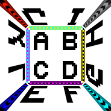
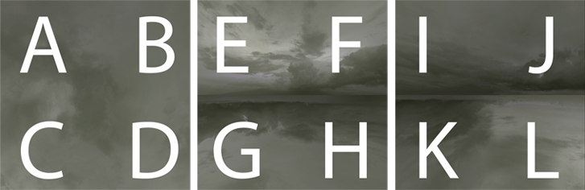

Обзор
Разделы
Скайбокс — это куб без нижней стороны, который содержит окружающую среду вокруг сцены, например небо или далекие горы. Куб рассматривается изнутри и обычно видна только верхняя половина куба, поэтому достаточно, чтобы верхняя половина сторон куба была текстурирована.
В CryENGINE для определения сторон куба используются три квадратные текстуры. Один для верхней грани куба (с суффиксом _).5 в имени файла) и две текстуры, содержащие изображения четырех боковых граней (с использованием префиксов _12 и _34).
Специальная настройка
На следующих изображениях показано необходимое расположение текстур неба:



Итоговая компоновка полушария (смотря вверх, в небо)
Конечный результат должен выглядеть так (без букв): 
Использование статического скайбокса
Чтобы использовать скайбокс вместо динамического неба HDR, перейдите в Окружающая среда вкладку в Sandbox и выберите в разделе SkyBox материал, который использует шейдер неба (не SkyHDR, так как он будет использовать динамическое небо HDR).
Вы можете применить любую из трех текстур скайбокса к слоту диффузной текстуры материала. Поскольку это простой рендеринг кубической текстуры, большинство параметров шейдера/материала не будут влиять на визуализируемый скайбокс. Всего лишь 100% непрозрачность и диффузная текстура — это все, что нужно.
Советы
- Очень мягкие градиенты сильно страдают от сжатия DXT. Либо вы избегаете сжатия (требуется гораздо больше текстурной памяти), либо добавляете к изображению немного шума. Это также может принести пользу несжатым текстурам.
- Рисование текстур с очень мягкими градиентами должно выполняться с более высокой точностью (например, Photoshop 16 бит вместо 8 бит).
- В зависимости от ограничений памяти и целевого разрешения вам следует тщательно выбрать формат сжатия, включить или отключить MIP-карты, а также разрешение текстуры.
- Рендеринг предполагает, что пиксели по краям и углам дублируются на другой стороне. Сжатие DXT выполняется для блока пикселей 4x4, что может вызвать дополнительные проблемы. Зачастую это может исправить художник.
- Если текстуры скайбокса при применении к небу выглядят очень размытыми, возможно, это связано с применением MIP-текстур. Убедитесь, что вы сохраняете текстуры без применения MIP-мэппинга.
- Чтобы узнать, как создавать текстуры для нового скайбокса, см. SkyPaint Урок.